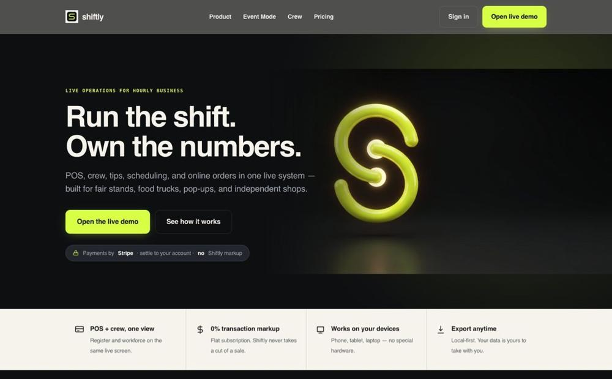
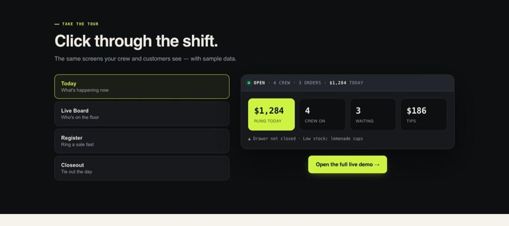
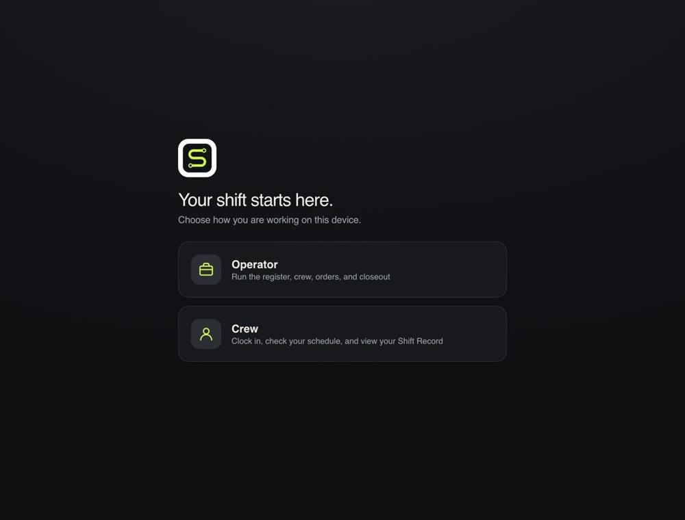

Shiftly
Fair Stand OS — run your whole floor from one screen. POS, staff, scheduling, payroll, and tips in one installable app, with no per-transaction fees eating your margin.

The problem
Local floors run on duct tape and card-processor fees. A POS here, a scheduling app there, a spreadsheet for tips, and a processor skimming every sale. For a fair stand or food truck it's chaos on the busiest day of the year. Shiftly puts the whole operation — sales, staff, tips, payroll — on one screen anyone can run.
What it does
Point of sale
Fast POS built for a rush — menu, modifiers, and checkout a new hire can run in minutes.
Staff board
Clock in/out, roles, and who's on the floor right now — live, on one screen.
Scheduling
Build shifts, swap them, and see coverage before the day starts.
Payroll + tips
Hours, tips pooled and split fairly, and payroll math done for you.
No per-transaction fees
Flat monthly, not a cut of every sale — the margin stays yours.
Installable PWA
Installs like a real app on any phone or tablet, works at the stand, syncs when it can.


The approach
Local operators don't fail because they lack software — they fail because they're running four tools that don't talk to each other while a processor skims every sale. I designed Shiftly around one screen anyone on the floor can run, then made the pricing itself the argument: a flat monthly fee instead of a percentage, so the busiest day of the year doesn't become the most expensive.
Building it offline-first was a deliberate constraint, not a feature. A fair stand or food truck loses signal constantly; a POS that stalls at the window is worthless. Shiftly runs fully local and syncs when it can, which is why it holds up in exactly the environments other tools quietly break in.
Pricing model
Flat monthly, no cut of your sales — deliberately priced against the processor-fee model that eats local margins.
◉ Proof: a real working PWA (installable, offline-first), not a static mockup. Shiftly and Fair Stand OS are the same product direction. Status: early sales.